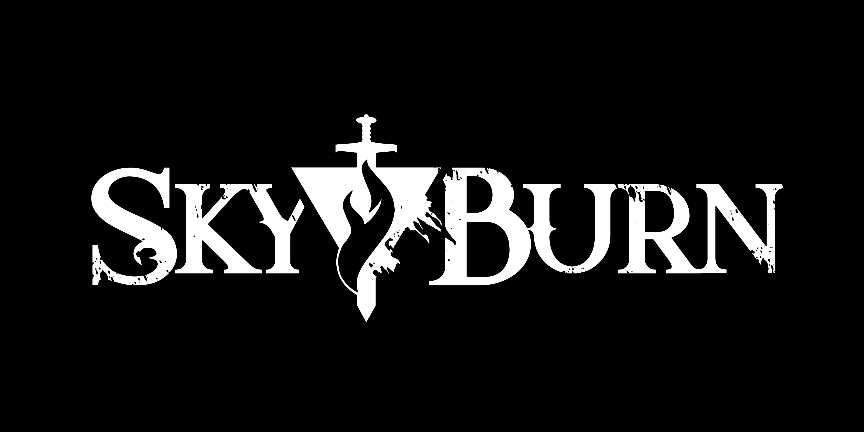
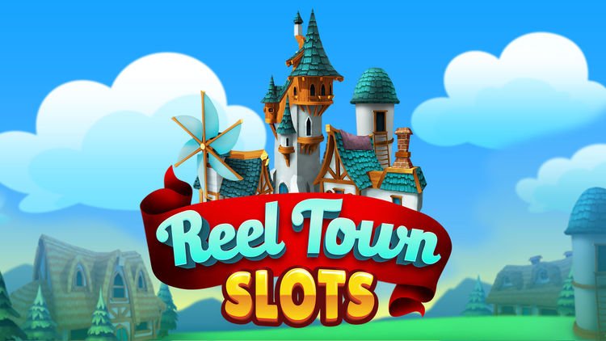
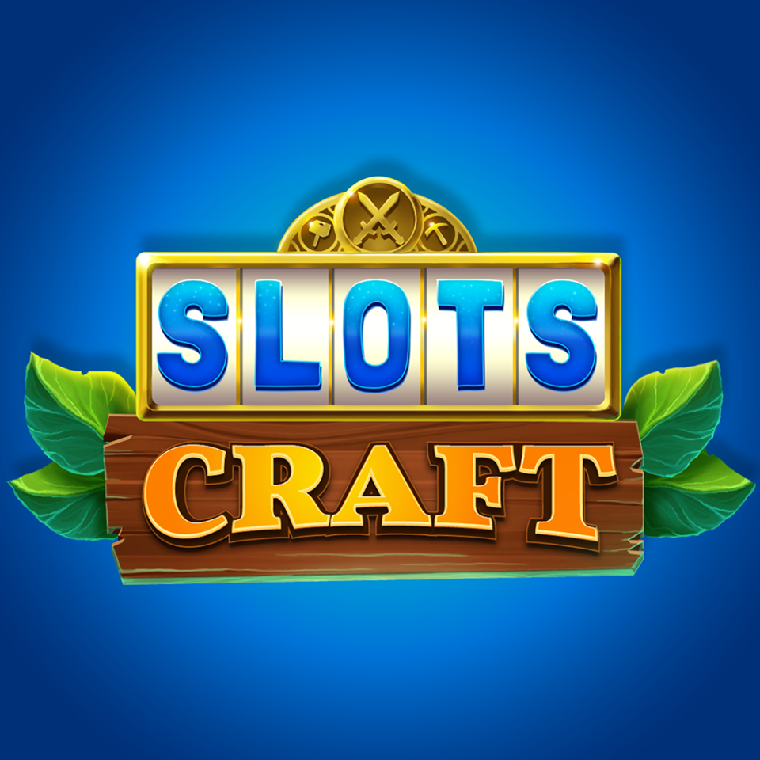
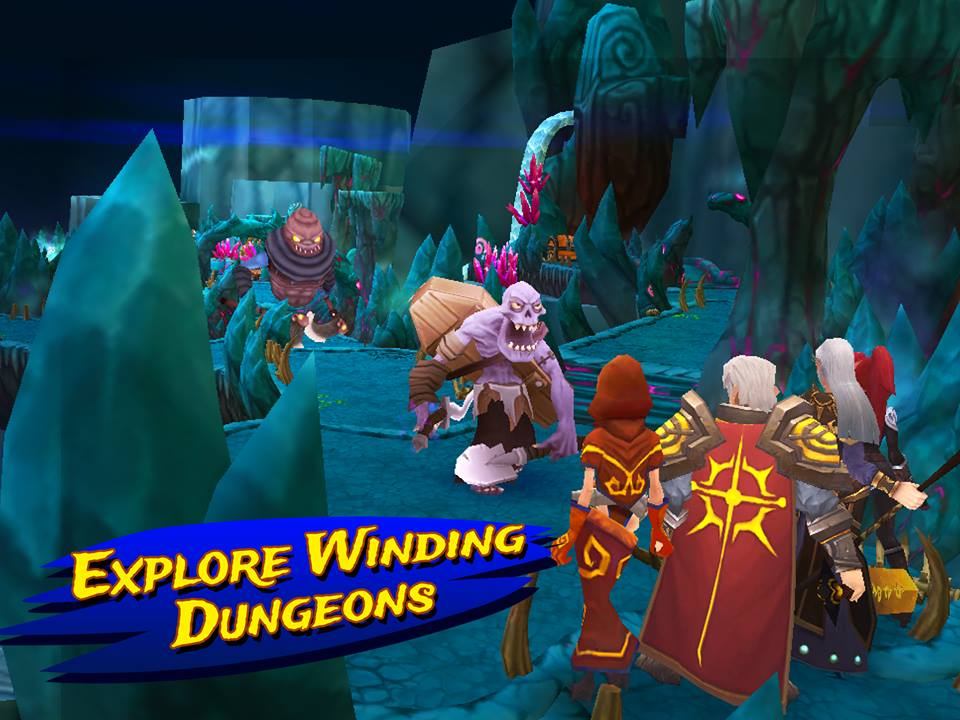
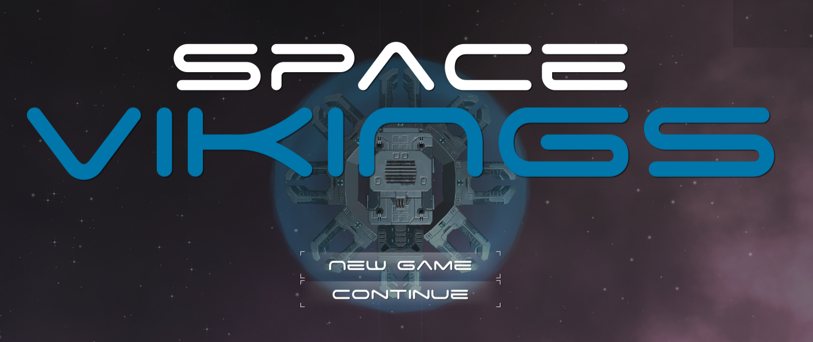

Rob Luckfield
Game Developer
Welcome. My name is Rob Luckfield, and I am a game developer currently based in Austin, Texas. My work experience includes roles as a Producer, Engineer, Audio Designer, QA Manager, and Web Developer.
Currently, I manage day-to-day operations as Producer for two studios, Cloudyshark Studios and Skyburn Industries.
I'm passionate about developing high-quality products and immersive experiences, particularly in the premium gaming space and with agile development teams.
Below you'll find more details about myself, my work, and how you can contact me.
Production
Producer & Engineer - Skyburn Industries

Skyburn (working title)
A unique new experience, Skyburn provides players with a "simulated MMORPG" - classic MMO-style RPG gameplay with a compelling story and drastic quality of life improvements - such as simulated party heroes, quick instancing with whomever you want - your friends on the couch, your friends online, or your own whole guild!
This upcoming title combines the world design and gear-driven RPG elements of games like World of Warcraft and Diablo with the narrative, exploration, and art design of games like The Legend of Zelda and The Elder Scrolls.
As Producer on this title, I lead development and manage interdepartmental communications to design key features, plan our timelines, and make sure we hit milestones on time. Working closely with each department in our studio, I oversee each feature and system from concept, design, and documentation through implementation, testing, and verification. I work to maintain rapid development with dependable accountability through the practices and tools of Agile, Scrum, and Trello.
As an Engineer, I also work to create each feature, primarily implementing UI and Gameplay features. I work closely with our other engineers to provide support on server-driven data systems, a huge component for any multiplayer RPG experience. Working as both Producer and Engineer, I often take on features from beginning to end, and work closely with our tech artists to implement their assets into our growing 3D world.
Currently, Skyburn Industries is in a rapid state of growth - our 10 man team is incredibly talented, but we're also incredibly ambitious. We're hard at work to expand our company and our portofolio, and next in the pipeline is a currently-unannounced FPS title with RPG elements. Between these two titles, I'm constantly honing skills in RPG game design, physics & 3D-math, and FPS gameplay engineering. This title will be called Slumber, and I hope to share more soon.
Producer & Engineer - CloudyShark Studios

Reeltown Slots
Slots-driven City Builder for iOS, built on the core of Vegas-quality slots with a unique town-building meta loop.
As Producer on this title, I led development and managed interdepartmental communications to plan milestones, hit deadlines, and maintain developer-publisher relations. Working closely with Project managers and Producers at our publishing company, Big Fish Games, as well as our internal design team, I designed and improved our systems based on metrics and player feedback.
I also worked with JIRA, Confluence, and Trello systems to maintain that constant progress towards our goals. With our developers, artists, and engineers, as well as Big Fish's QA leads, I documented, designed, and tracked feature implementation. This process continued through QA testing and issue tracking to hit those milestones consistently and effectively.
I continued to lead our team to success through the soft-launch of our game, releasing the product and growing our audience in Canada and several European countries. During this period, we continued development, where I aided in the design of future content and feature updates, and maintained a constant improvement in our metric data. The game continued to grow in praise, audience, and profits until Big Fish was acquired by Aristocrat Leisure, and our companies failed to reach a contractual agreement in moving forward.
On the technical side, I designed, documented, and implemented key features in the meta town-building gameplay. I worked closely with our technical artists and engineers to grow my skills in engineering, as I worked on features such as timed retention rewards, town layout designs, and art asset implementation. I also worked closely with our designers and project managers to implement and improve our FTUE, continually raising our stats of player retention and conversion as we updated the first few minutes of gameplay.
Quality Assurance
QA Manager - CloudyShark Studios


SlotsCraft
Slots-based RPG for iOS, designed around town building and dungeon crawling
As QA Manager on this title, I worked closely across multiple disciplines to fix bugs, implement new features, and ensure that milestones were met on time. I also managed QA testers in-house and externally through 3rd party testing, maintaining our Trello board as our team and external testers reported, fixed, and verified issues. Individually, I implemented automated test cases for data verification, developed test cases for new features & functionality, and communicated with our beta testers for customer support & bug reporting.
In addition to QA responsibilities, I created a majority of the dungeon levels in Unity, working closely with the team's designer to go from wireframes to fully-functional levels and quests. I also worked closely with the team's tech artist, implementing and fixing issues with art assets (models, animations, materials, shaders, particle effects, etc).
QA Testing - Pole to Win International
I executed test cases and reported bugs on several games for Pole To Win, working with developers in various later stages of development.
These projects were focused in both the mobile and console gaming platforms, with various hardware and software testing involved.
I worked with developers on many of these projects, and I have listed below several of the higher-profile projects to which I contributed.

Heavenstrike Rivals
Mediatonic Games & Square Enix - Turn-based PvP mobile strategy game

Pokemon GO
Niantic - Augmented reality (AR) mobile game in Nintendo's Pokemon franchise

Pokken Tournament
The Pokemon Company & Bandai Namco - Fighting game for the Wii U that combines the Pokemon IP with Tekken gameplay

Batman: Arkham Underworld
Warner Bros. Interactive - Clash-of-Clans style mobile game featuring Batman and his rogues gallery of villians
Game Jams & Student Projects
Games

Space Vikings
A twin-stick bullet-hell shooter, Space Vikings combines a classic arcade experience with a roguelite meta, featuring procedural waves of enemies and player upgrades.
This project was conceived of and developed over the period of approximately 2-3 days as part of a game jam. I worked as the sole engineer and co-designed the entire experience with a tech artist, Luke Litman, to rapidly develop the title.
The goal of the game was to quickly create an addicting core loop - and within a day, I had fully engineered the core experience of shooting endless waves of enemies until you die. The next day, we polished the experience and honed the meta content - creating upgrades, and crafting a more reliable procedural content system.
By the third day, we wrapped up with minor bug fixes and final polish, created a build that could be played with keyboard and mouse, or an xbox controller. Supporting both PC and Web GL builds, the game is easily available to play (see linked image). Plug in a controller or use your keyboard and give it a try.


Hangtime
Project Movement - 3D platformer with rope-swing mechanics and procedural sound design.
For the entirety of the May 2015 semester at the University of Texas, I worked with a team of four other students to develop a 3D game in Unity.
Taking on the Lead Design role, I led the team through agile development, daily scrum and weekly sprints.
Each week, the team would collectively review the previous sprint and plan milestones for the sprint ahead.
The two links will connect you to a download for the game, as well as the trailer for the game.
In addition to designing the project, I filled the role of Audio Engineer, utilizing Wwise and C# scripting for procedural audio design.
Also serving as Audio Designer and Composer, I designed the project with an emphasis on progress-tracking audio design.
This feature allows the music to adapt to the player's location, musically developing as the player proceeds through each level.
I also created the majority of 3D assets featured throughout the game, using Maya 3D modeling software.
The links above connect to a download for the game (as Wwise prevents browser-based web play), and a trailer created for the game.


After
Transient Games - 2D platformer with puzzle elements and an unraveling mystery.
For the entirety of the Fall 2014 semester at the University of Texas, I worked with a team of four other students to develop a 2D game in Unity.
Using agile development, daily scrum and weekly sprints, we collectively designed the game, reviewing and setting milestones for each sprint.
The two links allow you to play the game in the browser-based unity player and watch the trailer for the game.
In addition to co-designing the project, I filled the role of Audio Engineer, creating C# scripts for audio playback.
I also served as Audio Designer and Composer, synthesizing and composing music and sound effects across the entire project.
The links above connect to the in-browser Unity player, to play the game, and a trailer created for the game.
Web Projects

SoundHouse is a procedurally-generated collaborative ambient music app.
Upon visiting the webpage, visitors are greeted by a uniquely-generated piece of ambient piano music.
After creating an account and/or logging in, users may choose preferences to shape the sounds of their ambient sessions.
If more than one user logs in, the users will both provide their sound preferences to the session.
The music also changes keys procedurally, as to keep the music from stagnating.
The app is built primarily with Ruby on Rails, streaming audio files from an Amazon S3 bucket via JavaScript and CoffeeScript.
By using a Redis server with Action Cable, I created a job to fetch new audio files as each user joins the session.
Similarly, a secondary job fetches new audio files as the key slowly changes over time.
I designed and created this application as my final project at the Iron Yard.

TeamShare is a team-based file-sharing app, created by a team of four backend Iron Yard students.
We created the app as part of a week-long exercise in working directly with a client business.
This app allows the client's users to upload and view text and image files.
Users can then grant read-and-write and read-only permissions, based on the file's creator and user's admin status.
Additionally, the app features keyword searching, team creation, team-based permissions, recursion, and Cucumber testing.

The Weirdest Places in Austin a website dedicated to ranking the best weird places in Austin, ranked by user voting.
Over the course of a weekend, a small group of front-end students and I collaborated in creating this website during our enrollment at The Iron Yard.
During this project we practiced agile methodoligies, such as daily scrum, and managed sprints via Trello, complete with task-based time estimations.
As the sole backend engineer of the project, I provided the front-end with JSON data for each location and user.
On the backend, I also created a system for users to place upvotes on their favorite places, allowing each place to be ranked.
Because the webpage is not currently live, the link connects to my github repo for the project.